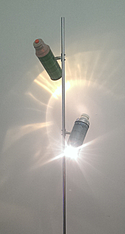
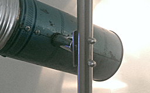
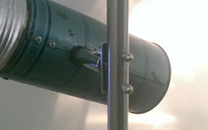

I found one thermos and thought about using it for a desk lamp. Then I found the second and decided to turn them into an upright lamp. They create interesting light textures from reflection inside the flasks. I had the pole, was just a case of working out how to fit them to it. A couple of attempts later… The base is an old aluminum frying pan filled with concrete for ballast, leaving channels for wiring The light mounts inside the thermos proved a little intricate, the switches were from some old dolphin torches. The final detail came much later when I found the little end cap for the pole. It usually goes when you're not looking for something you find it...

Upright Lamp, 12V 2x10W Halogen globes
